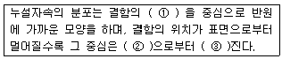
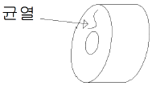
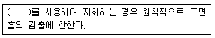

자기비파괴검사기사(구) (2013-03-10 기출문제)
1과목: 자기탐상시험원리
1. 전류에 의한 자계의 방향을 결정해 주는 것은?
- 플레밍의 오른손 법칙
- 플레밍의 왼손 법칙
- 오른나사 법칙
- 렌쯔의 법칙
(정답률: 알수없음)

2. 자분탐상시험시 시험체의 탈자에 대한 검사원의 자세는?
- 모든 대형 시험체에는 Loop 방법을 이용한다.
- 관련 원리와 요구되는 탈자의 정도를 잘 알아둔다.
- 재료의 특성과 무관하게 모든 시험체는 탈자한다.
- 항상 시험체를 망치로 두드린 후 표지를 부착한다.
(정답률: 알수없음)
3. 다음 ( ) 안에 들어갈 적당한 내용은?

- ① 아래쪽 ② 표면 ③ 가까워
- ① 아래쪽 ② 결함 ③ 멀어
- ① 위쪽 ② 표면 ③ 멀어
- ① 위쪽 ② 결함 ③ 가까워
(정답률: 알수없음)
4. 코일법을 적용할 대 강자성체에 작용하는 자계 강도가 코일이 만든 자계 강도보다 약하게 되는 가장 큰 이유는?
- 반자계 대문에
- 항자력 때문에
- 잔류자계 때문에
- 유효자계 때문에
(정답률: 알수없음)
5. 코일법으로 형광습식자분을 이용하여 직경이 작은 환봉을 검사했을 때 원주 방향의 한 면에서 흡착량도 적고 뚜렷하지 않은 자분 지시가 나타났다. 불림(normalizing)하고 재시험을 하니 이 지시가 사라졌다. 이러한 지시는 무엇으로 판단되는가?
- 전류지시
- 재질경계지시
- 자극지시
- 냉간가공지시
(정답률: 알수없음)
6. 자분탐상시험의 자화장치로 영구자석을 쓰는 경우에 대한 장점으로 틀린 것은?
- 전원이 없어도 된다.
- 휴대하기가 쉽다.
- 유지비가 비교적 싸게 든다.
- 물체의 유도되는 자계의 세기 조절이 쉽다.
(정답률: 알수없음)
7. 침투탐상시험 중 가장 탐상감도가 우수한 것은?
- 용제성 염색침투탐상
- 용제성 형광침투탐상
- 후유화성 염색침투탐상
- 후유화성 형광침투탐상
(정답률: 알수없음)
8. 비파괴검사법 중 검사 속도가 빠르고 자동화가 쉬우며, 전도체의 표면 결함 검출에 감도가 우수한 것은?
- 누설검사
- 초음파탐상시험
- 와전류탐상시험
- 방사선투과시험
(정답률: 알수없음)
9. 일반적으로 검사 후 결함의 크기 및 형상을 장기적으로 보전하기 적합하여 많이 사용되는 비파괴검사법은?
- 누설시험
- 자분탐상시험
- 방사선투과시험
- 침투탐상시험
(정답률: 알수없음)
10. 가열양극 할로겐법의 특성을 설명한 것 중 옳은 것은?
- 대기압 하에서 작업할 수 없다.
- 할로겐 추적가스에만 응답할 수 있다.
- 기름에 막혀 있는 누설은 검출할 수 없다.
- 할로겐 추적가스에 장시간 노출되어도 누설신호가 사라지지 않는다.
(정답률: 알수없음)
11. 비파괴 시험 원리와 그에 따른 비파괴시험 방법이 틀린 것은?
- 모세관 현상 이용 - 침투탐상검사
- 적외선에너지 변화 이용 - 중성자투과검사
- 유체흐름, 압력차 이용 - 누설검사
- 음파의 진행과 반사 - 초음파탐상검사
(정답률: 알수없음)
12. 침투탐상검사의 적용 용도에 대한 설명으로 옳은 것은?
- 검사체에 존재하는 표면 잔류응력을 확인한다.
- 검사체의 표면에 존재하는 불연속을 검출한다.
- 검사체에 존재하는 이종 성분을 검출한다.
- 검사체에 존재하는 불연속의 크기, 깊이, 위치를 확인하고 평가한다.
(정답률: 알수없음)
13. 와류탐상검사에 관한 설명으로 틀린 것은?
- 관통형 코일을 보빈코일이라고 한다.
- 내삽형 프로브는 관의 내면검사에 유리하다.
- 프로브형 코일은 표면결함 탐상에 쓰인다.
- 자기비교 코일은 선 또는 관재의 시험체에 이용한다.
(정답률: 알수없음)
14. 다음 중 누설검사를 하는 이유가 아닌 것은?
- 표면의 불연속을 검출하기 위해
- 표준에서 벗어난 누설률과 부적절한 제품을 검출하기 위해
- 시스템 작동에 방해되는 재료의 누설손실을 방지하기 위해
- 돌발적인 누설에 기인하는 유해한 환경적인 요소를 방지하기 위해
(정답률: 알수없음)
15. 다음 중 비파괴시험적인 요소를 포함하고 있는 것은?
- 경도시험
- 굽힘시험
- 충격시험
- 인장시험
(정답률: 알수없음)
16. 철강재를 용접하여 일정시간 경과 후 표면 및 표면직하의 결함 검출에 경제적이고 손쉬운비파괴검사법은?
- 음향방출시험
- 초음파탐상시험
- 자분탐상시험
- 방사선투과시험
(정답률: 알수없음)
17. 중성자투과시험에 이용되는 중성자빔의 발생원과 거리가 먼것은?
- 원자로
- 입자가속기
- X선 발생기
- 방사성 동위원소
(정답률: 알수없음)
18. 초음파탐상시험에서 초음파가 경계면에 경사각으로 입사하여 기체의 경계면에 도달하였을 경우 반사되는 초음파의 종류는?
- 종파
- 횡파
- 판파
- 표면파
(정답률: 알수없음)
19. 자분 분산매가 가져야 할 특성에 대한 설명 중 옳은 것은?
- 휘발성이 크고, 점도는 낮아야 한다.
- 점도가 낮고, 장기간 변질이 없어야 한다.
- 인화점이 낮고, 인체에 유해하지 않아야 한다.
- 적심성은 나쁘며, 결함에서 활발한 화학반응이 일어나야 한다.
(정답률: 알수없음)
20. 육안검사에 대한 설명으로 틀린 것은?
- 표면은 깨끗해야 한다.
- 사용 중 검사가 가능하다.
- 표면결함만 검출이 가능하다.
- 표면 및 표면하 결함 검출이 가능하다.
(정답률: 알수없음)
2과목: 자기탐상검사
21. 자분탐상시험에서 자화시 고려사항이 아닌 것은?
- 자장의 방향을 예측되는 결함의 방향에 대하여 가급적 직각이 되게 한다.
- 자장의 방향을 시험편에 가급적 평행으로 되게 한다.
- 반자장은 가급적 크게 하여 자화능력을 향상시킨다.
- 시험편 소손이 우려되면 직접 통전에 의한 자화방법은 피한다.
(정답률: 알수없음)
22. 축통전법에 의한 자화기기 접촉부에 납판이나 구리선망과 같은 전극의 접촉부를 갖는 주된 이유는?
- 접촉면에 밀착시키기 쉽고 전도성이 좋으므로
- 금속에 열을 가하여 자계를 유도하기 위하여
- 접촉면과 떨어지므로 신뢰성을 높이기 위하여
- 낮은 용융점을 가져 시험체의 손상을 방지하므로
(정답률: 알수없음)
23. 프로드법에서 시험체에 전류를 흘리기 위한 전극으로 사용하는 것이 아닌 것은?
- 전극판 접촉기
- 전류관통봉
- 크램프 접촉기
- 프로드 전극
(정답률: 알수없음)
24. 자분탐상검사에서 의사지시의 발생요인으로 고려할 수 있는 가장 큰 요인은?
- Pin hole
- 용접불량
- 잔류응력
- 불연속부
(정답률: 알수없음)
25. 자분탐상검사에서 표준시험편의 사용에 대한 설명이 아닌것은?
- 통전방법과 통젖시간의 설정
- 검사체면의 유효자계 범위의 확인
- 의사자분모양과 대조 확인이 필요할 때
- 검사액의 농도, 자성의 저하 및 조작의 적부조사
(정답률: 알수없음)
26. 자분탐상검사로 피로균열(Fatigue Crack)을 검출하는데 가장 효과적인 자화전류는?
- 교류
- 직류
- 단상반파정류
- 삼상전파정류
(정답률: 알수없음)
27. 다음의 자분탐상검사법 중 누설자속탐상법에 해당되지 않은 것은?
- 반도체 자기센서법
- 탐사 코일법
- 전자유도시험법
- 자기 테이프법(녹자 탐상법)
(정답률: 알수없음)
28. 자분탐상검사에서 직육면체 모양의 시험체 모서리 부근에 무관련지시가 고르게 나타났다면 그 이유로 가장 적합한 것은?
- 시험체의 금속조직 차이 때문이다.
- 모서리 부근의 표면이 깨끗하기 때문이다.
- 모서리 부근에서 자속밀도가 희박하기 때문이다.
- 자력선은 시험체의 가장 얇은 부분으로 들어가고 나오는 경향이 있기 때문이다.
(정답률: 알수없음)
29. 자분탐상시 나타난 자분모양이 결함인지 의사모양인지 불분명할 때 취해야 하는 조치로 가장 적절한 것은?
- 어닐링 열처리한 후 재검사한다.
- 표면을 그라인딩한 후 재검사한다.
- 의사모양이 나타나지 않는 다른 검사법으로 재확인하고 그래도 불분명하면 결함으로 간주한다.
- 의사모양으로 결정하고 추후 가동 중에 수시로 재검사를 실시하여 진행 여부를 관찰한다.
(정답률: 알수없음)
30. 압연된 환봉의 표면 심(seam)을 자분탐상 검사하는데 가장 적합한 방법은?
- yoke를 이용한 선형자화
- coil을 이용한 원형자화
- prod를 이용한 선형자화
- 축통전법을 이용한 원형자화
(정답률: 알수없음)
31. 자분탐상검사에 사용되는 검사액에 첨가하는 분산매에 대한 성질로 옳은 것은?
- 휘발성 높을 것
- 인화점이 낮을 것
- 인체에 유해하지 않을 것
- 점도가 높고, 적심성이 나쁠 것
(정답률: 알수없음)
32. 다음 결함 중 가공품이 아닌 제조 과정에 발생한 결함으로 가장 관계가 깊은 것은?
- 크리프균열
- 피로균열
- 냉간균열
- 응력부식균열
(정답률: 알수없음)
33. 습식자분의 성능점검 방법으로 맞는 것은?
- 거치식 장치의 자분은 주 1회 이상 점검
- 검사절차서에 표기된 시험편으로 점검
- 농도의 확인은 자분액을 가열 및 증발시키고 잔류물계량
- 물을 사용하는 경우는 방청제만 첨가
(정답률: 알수없음)
34. 시험품에 그림과 같은 불연속이 존재한다면 이 불연속을 잘 검출할 수 있는 자화방법은?

- 코일 속에 시험품을 놓는다.
- 자속 관통법을 사용하여 검사한다.
- 도체로 된 시험품에 직접 전류를 통한다.
- 원통내부에 중심도체를 끼우고 자화하며 검사한다.
(정답률: 알수없음)
35. 형광자분모양의 관찰에 사용하는 자외선조사등의 사용 및 관리사항에 대한 설명으로 틀린 것은?
- 자외선조사등은 광원이 안정된 후 사용하여야 한다.
- 자외선강도는 일반적으로 320~400μW/cm2 정도 일 때 사용하여야 한다.
- 자외선강도의 측정은 시험체의 표면에서 측정하여야 한다.
- 자외선조사등의 필터면 청소불량은 자외선강도가 저하 될수 있으므로 수시로 청결을 유지하여야 한다.
(정답률: 알수없음)
36. 자분탐상검사 후 시험체에 자극이 있는지 여부를 알기 위하여 간이형 자장지시계를 사용할 때 가장 관계가 깊은 인자는?
- 유도성
- 투과성
- 자력선수
- 잔류자기
(정답률: 알수없음)
37. 자분탐상검사에서 자분모양의 관찰에 대한 설명으로 옳은 것은?
- 가급적 관찰면에 대하여 수직인 상태의 시각으로 관찰한다.
- 잔류법 적용시는 형광자분의 양을 규정 이상으로 높여 관찰한다.
- 연속법 적용시는 자화를 정지한 후 자분을 적용하여 관찰한다.
- 조사광이 관찰면에 대하여 반사광이 있는 위치와 각도에서 관찰한다.
(정답률: 알수없음)
38. 자분탐상검사에서 잔류법으로 검사하기에 가장 알맞은 재료는?
- 고 보자성, 저 투자율
- 고 보자성, 고 투자율
- 저 보자성, 저 투자율
- 저 보자성, 고 투자율
(정답률: 알수없음)
39. 자분탐상시험 중 직접 통전방식이 아닌 것은?
- 요크법
- 축통전법
- 프로드법
- 직각통전법
(정답률: 알수없음)
40. 탈자할 때 시험체에 걸어주는 반전 자계의 방향에 대하여 효과적인 방법의 설명으로 옳은 것은?
- 코일법으로 자화했다면 축통전법으로 탈자를 한다.
- 축통전법으로 자화했다면 코일법으로 탈자를 한다.
- 자화할 때 걸어준 자계 방향과 같은 방향으로 탈자를 한다.
- 자화할 때 걸어준 자계 방향과 무관하게 지그재그 방향으로 탈자를 한다.
(정답률: 알수없음)
3과목: 자기탐상관련규격및컴퓨터활용
41. 철강 재료의 자분탐상 시험방법 및 자분모양의 분류(KS D 0213)에서 연속법으로 사용할 수 없는 전류는?
- 교류
- 맥류
- 직류
- 충격전류
(정답률: 알수없음)
42. 보일러 및 압력용기에 대한 표준자분탐상검사(ASME Sec.V Art.25 SE-709)에 따라 강파이프 용접부위에 중심도체를 사용하여 자화 할 때, 한번 자화로 효과적인 검사를 할 수있는 원주상의 탐상 유효 길이는?
- 사용된 중심도체 직경의 1배 길이
- 사용된 중심도체 직경의 2배 길이'
- 사용된 중심도체 직경의 3배 길이
- 사용된 중심도체 직경의 4배 길이
(정답률: 알수없음)
43. 보일러 및 압력용기에 대한 표준자분탐상검사(ASME Sec.V Art.7)에 따라 직경 2인치, 길이가 10인치인 환봉을 선형자화시 자장 강도는 몇 암페어.턴(A.T)을 주어야 하는가?
- 2500
- 5000
- 7000
- 10000
(정답률: 알수없음)
44. 보일러 및 압력용기에 대한 표준자분탐상검사(ASME Sec.V Art.7)에서 교류용 전자석을 사용하는 극간(Yoke)법에서 두 극 사이를 최대로 유지할 때 극간이 갖는 최소한의 인상력은?
- 5파운드
- 10파운드
- 15파운드
- 20파운드
(정답률: 알수없음)
45. 철강 재료의 자분탐상 시험방법 및 자분모양의 분류(KS D 0213)에 따른 자분탐상시험에서 시험면을 분할하여 시험하는 경우의 설명으로 잘못된 것은?
- 시험체가 너무 커서 1회의 자화로 시험이 어려울 때
- 시험체의 길이가 작아 교류를 사용하여 연속법으로 자화할 때
- 시험체의 단면이 급변하여 1회의 자화로 시험면의 유효자계강도가 너무 강하거나 또는 너무 약한 부분이 생길 때
- 시험체의 모양이 복잡하여 1회의 자화로 자계강도를 시험면 전부에 가할 수 없을 때
(정답률: 알수없음)
46. 보일러 및 압력용기에 대한 자분탐상검사(ASME Sec.V Art.7)에서 프로드법 사용시 극간 거리는 최소한 몇인치를 넘어야 한다고 규정하고 있는가?
- 3인치
- 5인치
- 6인치
- 8인치
(정답률: 알수없음)
47. 철강 재료의 자분탐상 시험방법 및 자분모양의 분류(KS D 0213)에서 단조품이나 압연품에 나타나는 메탈 플로우부에 발생되는 유사지시는 어떻게 확인하는가?
- 시험면을 매끄럽게 한 후 재시험한다.
- 잔류법으로 재시험한다.
- 탈자 후 재시험한다.
- 매크로, 현미경 시험 등으로 확인한다.
(정답률: 알수없음)
48. ASME Sec.Ⅷ, Div.1 App.6에 따라 원형자분지시를 평가할때 불합격으로 평가해야 하는 지시의 크기는, 가장 작은 관련지시의 최소 몇 배 이상이어야 하는가?
- 2배
- 3배
- 4배
- 5배
(정답률: 알수없음)
49. 보일러 및 압력용기에 대한 표준자분탐상검사(ASME Sec.V Art.25 SE-709)에서 형광자분의 탐상일 때, 시험체 표면에서 가시광선은 몇 룩스(Lux) 이하이어야 하는가?
- 20
- 200
- 300
- 1000
(정답률: 알수없음)
50. 철강 재료의 자분탐상 시험방법 및 자분모양의 분류(KS D 0213) 중 자분모양의 분류에 관한 설명으로 틀린 것은?
- 균열에 의한 자분모양으로 분류되는 경우도 있다.
- 연속한 자분모양은 선상 또는 원형상의 자분모양으로 분류한다.
- 시험면에 생긴 자분모양이 의사모양이 아닌 것을 확인 한 후에 해야 한다.
- 여러 개의 자분모양이 일정한 면적 내에 분산해 있으면 분산한 자분모양으로 분류한다.
(정답률: 알수없음)
51. 철강 재료의 자분탐상 시험방법 및 자분모양의 분류(KS D 0213)를 적용하여 전류관통법으로 여러 개의 시험체를 동시에 시험할 때 고려할 사항으로 틀린 것은?
- 자계강도는 도체 중심에서의 반지름에 반비례한다.
- 반자계의 영향을 가능한 한 작게 한다.
- 잔류법인 경우 자기 펜 자국이 생기지 않도록 주의한다.
- 자계강도는 도체 외각에서의 반지름에 비례한다.
(정답률: 알수없음)
52. 철강 재료의 자분탐상 시험방법 및 자분모양의 분류(KS D 0213)에 따른 전처리 내용으로 틀린 것은?
- 전처리의 범위는 시험범위보다 넓게 잡아야 한다.
- 시험체는 원칙적으로 단일부품으로 분해한다.
- 습식용 자분을 사용하는 경우는 표면을 잘 건조시켜둔다.
- 필요에 따라 전극에 도체패드를 부착한다.
(정답률: 알수없음)
53. 보일러 및 압력용기에 대한 자분탐상검사(ASME Sec.V Art.7)에서 규정한 black light의 강도는 연속 사용시 적어도 얼마 기간마다 점검되어야 하는가?
- 한달마다
- 2주 마다
- 1주 마다
- 8시간 마다
(정답률: 알수없음)
54. 철강 재료의 자분탐상 시험방법 및 자분모양의 분류(KS D 0213)에 관한 다음 내용 중 ( ) 안에 알맞은 것은?

- 직류 및 맥류
- 맥류 및 교류
- 교류 및 충격전류
- 충격전류 및 직류
(정답률: 알수없음)
55. 보일러 및 압력용기에 대한 자분탐상검사(ASME Sec.V Art.7)에 따라 프로드법에서 자화전류의 개방회로 전압이 25V를 초과할 때 프로드 팁(tip)으로 사용하지 않도록 권고하는 재료는?
- 납
- 철
- 구리
- 알루미늄
(정답률: 알수없음)
56. 보일러 및 압력용기에 대한 자분탐상검사(ASME Sec.V, Art.7)에 의해 prod법으로 검사를 수행할 경우 적절한 자화전류의 세기는? (단 피검사체의 두께는 1 inch, 검사체 가로 길이는 10 inch, 검사체 세로 길이는 20 inch , 프로드 간격은 6 inch이다.)
- 200[A]
- 550[A]
- 700[A]
- 950[A]
(정답률: 알수없음)
57. 철강 재료의 자분탐상 시험방법 및 자분모양의 분류 (KS D0213)에 의해 용접부의 열처리 후, 압력용기의 내압시험 종류 후에 행하는 자화방법은 원칙적으로 어떤 방법을 사용하도록 권고하고 있는가?
- 축통전법
- 직각통전법
- 프로드법
- 극간법
(정답률: 알수없음)
58. 항공우주용 자기탐상 검사방법 (KS W 4041)에 따라 우너심 침전관을 사용하여 자분의 농도를 측정하고자 한다. 물을 매질로 하는 현탁액을 튜브에 넣은 후 얼마 후에 측정을 해야 하는가?
- 15분
- 30분
- 45분
- 60분
(정답률: 알수없음)
59. 철강 재료의 자분탐상 시험방법 및 자분모양의 분류(KS D0213)에서 A형 표준시험편에서 원의 직경은?
- 5mm
- 10mm
- 15mm
- 20mm
(정답률: 알수없음)
60. 보일러 및 압력용기에 대한 자분탐상검사(ASME Sec.V, Art.7)에 따라 탐상을 실시할 때 시험체의 길이 9인치, 직경3인치 인 강봉을 5회 감아 선형자화법으로 자화할 때 요구되는 자화전류는?
- 1000A
- 3000A
- 5000A
- 9000A
(정답률: 알수없음)
4과목: 금속재료학
61. Ni 합금중 실용합금이 아닌 것은?
- 애드미럴티 메탈(Admiralty metal)
- 큐푸로 니켈(Cupronickel)
- 콘스탄탄(Constantan)
- 모넬 메탈(Monerl metal)
(정답률: 알수없음)
62. 탄소함량에 대한 강의 설명으로 옳은 것은?
- 고탄소강일수록 성형성이 좋다.
- 0.12%C 이하의 저탄소강을 일명 강이라고 한다.
- 고속도공구강은 탄소함량이 0.3~0.5%범위이다.
- 중탄소강은 Q, T(담금질,뜨임)용으로 많이 사용된다.
(정답률: 알수없음)
63. 강에서 고온취성의 직접적인 원인이 되는 것은?
- FeO
- FeS
- MnO
- Fe3C
(정답률: 알수없음)
64. 형성기억효과의 종류 중 전방위 형상기억에 대한 설명으로 옳은 것은?
- 일반적인 일방향 형상기억합금이며, 오스테나이트상의 형상만을 기억하는 현상이다.
- 오스테나이트의 형상과 더불어 마텐자이트상이 변형되엇을 때의 형상도 기억하는 현상이다.
- 열탄성 마텐자이트 변태에 기인하며 초탄성에 의한 형상기억 효과는 응력부하온도에 의존하는 현상으로 응력유기 마텐자이트가 외부응력이 제거되면서 오스테나이트로 변태함으로 생기는 현상이다.
- 변형상태에서 시효시키면 나타나는 현상으로 온도에 따라 오스테나이트상으로부터 중간상을 거쳐 저온상으로 변태하며 이 때 마텐자이트 변태도 동반되는 현상이다.
(정답률: 알수없음)
65. 분말야금법(Powder Metallurgy)에 대한 설명으로 틀린 것은?
- 경하고 취약한 금속제품의 단조가 가능하다.
- 통상의 용융방법으로는 얻을 수 없는 고융점 금속재료의 제조에 응용할 수 있다.
- 재료를 용해하지 않으므로 용기나 탈산제 등에서 오는 불순물의 혼입이 없이 순수한 금속을 제조할 수 있다.
- 부분적 용해는 있으나 전부 또는 대부분이 용해되는 일이 없으므로 각 성분금속의 배합비대로 또한 분말의 혼합이 균일하면 균일제품이 얻어진다.
(정답률: 알수없음)
66. 탄소강의 열처리에서 불림(normalizing)처리로 얻을 수 있는 효과가 아닌 것은?
- 내부응력 감소
- 결정립의 조대화
- 저탄소강의 피삭성 개선
- 가공에 따른 분균질성 감소
(정답률: 알수없음)
67. 순철의 변태점에 관한 설명으로 틀린 것은?
- A3변태는 약 910℃에서 일어난다.
- 자기변태점은 약 768℃에서 일어난다.
- 순철의 변태점은 가열 및 냉각속도와 무관하다.
- A3변태는 가열에 의해 BCC 격자가 FCC 격자로 변한다.
(정답률: 알수없음)
68. 고체 침탄법에서 침탄 촉진제로서 가장 많이 사용하는 것은?
- CaO
- NaCN
- BaCO3
- CO2+N2
(정답률: 알수없음)
69. 구리(Cu)에 대한 설명 중 틀린 것은?
- 전기전도도가 은(Ag) 다음으로 크다.
- 점성이 작아서 절삭성이 우수하다.
- 결정격자 구조는 면심입방격자(FCC)이다.
- 자연수 중에서 보호피막이 생기기 쉬워 부식률이 작다.
(정답률: 알수없음)
70. 주철에 있어서 마우러(Maurer) 조직도란?
- C와 Mn의 양에 따른 조직 관계를 표시한 것이다.
- 냉각 속도와 (Co+Si)%의 변화에 따른 주철 조직의 변화를 표시한 것이다.
- 일정 냉각 속도에서 C와 P의 양에 따른 조직 관게를 표시한 것이다.
- 일정 냉각 속도에서 C와 Si 의 양에 따른 조직 관계를 표시한 것이다.
(정답률: 알수없음)
71. 피로강도를 증가시키는 방법으로 옳은 것은?
- 표면 거칠기를 증가시킨다.
- 표면층의 강도를 감소시킨다.
- 가능한 한 노치가 많게 한다.
- 표면 압연 및 쇼트 피이닝 처리를 한다.
(정답률: 알수없음)
72. 해수에서 순도가 높은 금속 덩어리로 채취가 가능하며 비중이 알루미늄의 약 2/3 정도 되는 금속은?
- Cd
- Cu
- Zn
- Mg
(정답률: 알수없음)
73. 팽창계수가 아주 적어 시계 태엽, 정밀기계 부품으로 사용하는 것은?
- 인바
- 고망간강
- 탕갈로이
- 고규소강
(정답률: 알수없음)
74. 가단주철의 성질에 대한 설명으로 틀린 것은?
- 백심가단주철은 두께 20~25mm 두꺼운 주물에 적합하다.
- 내식성. 내충격성, 내열성이 우수하고 절삭성이 좋다.
- 흑심가단주철의 인장강도는 30~40 kgf/mm2이다.
- 가단주철의 경도는 Si함량이 높을수록 좋다.
(정답률: 알수없음)
75. Al-Cu-Si계 합금으로써 Si를 넣어 주조성을 개선하고 Cu를 첨가하여 피삭성을 향상시킨 합금은?
- Y합금
- 로엑스(Lo-Ex)합금
- 라우탈(Lautal)
- 하이드로날륨(Hydronalium)
(정답률: 알수없음)
76. Fe-C평형 상태도에서 공석점의 자유도는? (단 , 압력은 일정하다.)
- 0
- 1
- 2
- 3
(정답률: 알수없음)
77. 화이트 골드(White gold)에 대한 설명으로 옳은 것은?
- 백금에 황금을 첨가한 재료이다.
- 백금에 Pd, Cu를 첨가한 재료이다.
- Au, Ni, Cu, Zn을 합금한 은백색 재료이다.
- 황금에 Sn을 첨가하여 적색을 갖는 재료이다.
(정답률: 알수없음)
78. 침탄후 2차 담금질(quenching)에 대한 목적으로 옳은 것은?
- 표면의 연화
- 표면의 경화
- 표면부의 결정미세화
- 중심부의 결정입도 미세화
(정답률: 알수없음)
79. Fe-C평형 상태도에 있어서 2성분계 상태도의 기본형과 관계가 없는 것은?
- 공정형
- 공석형
- 포정형
- 편정형
(정답률: 알수없음)
80. 오스테나이트형 스테인리스강의 입계부식을 방지하기 위한 방법을 설명한 것 중 틀린 것은?
- 탄소함량을 약 0.03% 이하로 낮게한다.
- 쇼트 피이닝을 실시하고 고 Ni 재료를 사용한다.
- Cr탄화물의 석출을 막기 위하여 Ti.Nb등을 첨가한다.
- 고온으로 가열하여 Cr 탄화물을 고용시킨 후에 급냉한다.
(정답률: 알수없음)
5과목: 용접일반
81. 다음 전기 저항 요접법의 종류 중 맞대기(butt)용접이 아닌 겹치기(lap)용접인 것은?
- 업셋 용접
- 프로젝션 용접
- 퍼커션 용접
- 플래시 용접
(정답률: 알수없음)
82. 가스용접용 토치는 사용하는 아세틸렌가스 압력에 의하여 저압식, 중압식, 고압식으로 나누어진다. 저압식 토치의 아세틸렌 공급압력으로 가장 적합한 것은?
- 0.⑤kgf/cm2이상
- 0.07kgf/cm2미만
- 0.4kgf/cm2 이상
- 1.5kgf/cm2 미만
(정답률: 알수없음)
83. 아크 전류가 일정할 때 아크전압이 높아지면 용접봉의 용융 속도가 늦어지고 아크 전압이 낮아지면 요접봉의 용융 속도가 빨라지는 아크의 특성은?
- 부저항 특성
- 절연회복 특성
- 전압회복 특성
- 아크길이 자기제어 특성
(정답률: 알수없음)
84. 용접시 조건에 의해서 변형과 잔류응력을 감소시키는 방법으로 틀린 것은?
- 용접후 용접 금속부의 변형과 잔류응력을 경감하는 방법으로 가우징법을 쓴다.
- 용접 전에 변형 방지대책으로 억제법, 역변형법을 쓴다.
- 용접 시공에 의한 경감법으로는 대칭법, 후진법, 스킵법등을쓴다.
- 용접 중 모재의 열전도를 억제하여 변형을 방지하는 방법으로는 도열법을 쓴다.
(정답률: 알수없음)
85. 플라스마 아크 용접에 관한 특징 설명으로 올바른 것은?
- 수동 용접도 쉽게 할 수 있다.
- 일반 아크 용접기에 비해 무부하 전압이 낮다.
- 일반적으로 설비비가 적게 든다.
- 철강 재료만 용접이 가능하다.
(정답률: 알수없음)
86. 테르밋 용접법의 일반적인 특징으로 틀린 것은?
- 전기가 필요 없다.
- 용접시간이 길고, 용접 후 변형이 크다.
- 차축, 레일의 접합 등 비교적 큰 단면의 맞대기 용접에 이용된다.
- 용접 이음부의 홈은 가스 절단한 그대로가 좋고, 특별한 모양의의 홈을 필요로 하지 않는다
(정답률: 알수없음)
87. TIG용 텅스텐 전극봉의 종류 중 KS등급기호 YWTh-1의 설명으로 틀린 것은?
- 1%토륨 함유 텅스텐 전극봉이다.
- 전극봉의 식별용 색은 황색이다.
- ACHF 전용 전극봉이며 Al,Mg합금의 접합에 쓰인다.
- 전자 방사능력이 뛰어나며 아크가 안정하다.
(정답률: 알수없음)
88. 용접에 의한 변형을 작게 하기 위하여 주로 박판용접에 적합한 아래 그림과 같은 용착법은?
- 대칭법
- 전진법
- 후진법
- 스킵법
(정답률: 알수없음)
89. 산소-아세틸렌 절단과 비교한 산소-프로판(LP) 가스절단 설명으로 잘못된 것은?
- 절단 상부 기슭이 녹은 것이 적다.
- 절단면이 미세하며 깨끗하다.
- 슬래그 제거가 쉽다.
- 후판 절단시 아세틸렌 보다 느리다.
(정답률: 알수없음)
90. 15℃ 15기압하에서 아세톤 1L 에 대하여 아세틸렌 가스는 약 몇L 가 용해 되는가?
- 285
- 325
- 375
- 420
(정답률: 알수없음)
91. 필릿 용접 이음부의 루트 부분에 생기는 저온 균열로 모재의 열 팽창 및 수축에 의한 비틀림이 주 원인이라고 판단되는 균열을?
- 루트 균열(root crack)
- 비드 밑 균열(under bead crack)
- 힐 균열(heel crack)
- 설퍼 균열(sulfur crack)
(정답률: 알수없음)
92. 용접의 기본기호와 명칭의 설명으로 틀린 것은?
- 급경사면 양쪽면 V형 홈 맞대기 이음 용접은 이고 급경사면 양쪽면 K형 홈 맞대기 이음 용접은 이다.
- 양면 플랜지형 맞대기 이음 용접은 이고 평면형 평행 맞대기 이음 용접은 이다.
- 부분 용입 한쪽면 V형 맞대기 이음 용접은 이고 부분 용입 한쪽면 K형 맞대기 용접은 이다.
- 한쪽면 U형 홈 맞대기 이음 용접은 이고 한쪽면 J형 홈 맞대기 이음 용접은 이다.
(정답률: 알수없음)
93. AW500 용접기를 사용하여 300A로 용접을 할 때 용접 입열량을 구하면 몇 J/cm 인가? (단 아크전압은 30V 무부하 전압은 80V 용접속도는 20cm/min 이다.)
- 9000
- 27000
- 48000
- 150000
(정답률: 알수없음)
94. 탄산가스 아크 용접에서 사용하는 복합 와이어의 종류 중 그림에 나타난 복합 와이어의 종류는?
- 아코스 와이어
- Y관상 와이어
- S관상 와이어
- NCG 와이어
(정답률: 알수없음)
95. 열적 핀치효과(pinch effect)에 대한 설명으로 올바른 것은?
- 높은 온도의 아크 플라스마가 얻어지는 아크 성질이다.
- 가스용접에서 청정작용에 이용되는 성질이다.
- 서브머지드 용접에 이용되는 제습 효과이다.
- 고주파 용접에서 밀도를 높이는 효과이다.
(정답률: 알수없음)
96. MIG 용접의 전류밀도는 TIG 용접의 몇 배 정도인가?
- 2배
- 4배
- 6배
- 10배
(정답률: 알수없음)
97. 다음 중 고온균열에 해당되는 것은?
- 토 균열
- 설퍼 균열
- 루트 균열
- 비드 밑 균열
(정답률: 알수없음)
98. 볼트(bolt)나 환봉 등을 강판이나 형강 등에 직접 용접하는 방법으로 모재와 볼트 사이에 순간적으로 아크를 발생시키는 용접방법은?
- 스터드용접(stud welding)
- 테르밋 용접(thermit welding)
- 불호아성 가스 아크용접(inert gas arc welding)
- 유니언 멜트 용접(union melt welding)
(정답률: 알수없음)
99. 아크 용접법 중 2개의 텅스텐 전극봉 사이에서 아크를 발생시켜 아크열을 이용하여 용접하는 것은?
- 테르밋 용접
- 불활성 가스 금속 아크 용접
- 탄산가스 아크 용접
- 원자 수소 아크 용접
(정답률: 알수없음)
100. 다음 용접법의 분류에서 융접에 해당하는 용접법은?
- 심 용접
- 초음파 용접
- 업셋 용접.
- 테르밋 용접
(정답률: 알수없음)